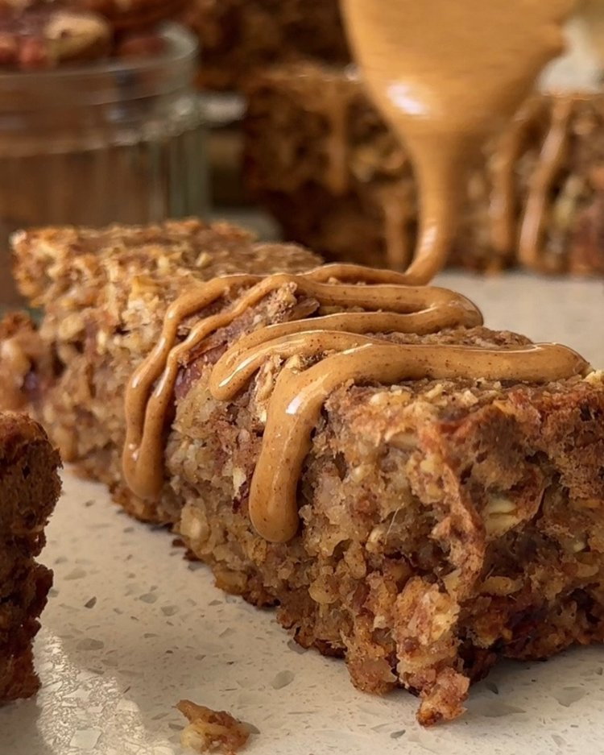

Blend the Wet Ingredients:In a blender, combine applesauce, pitted dates, melted coconut oil, and vanilla extract. Blend until you achieve a smooth consistency. This mixture will serve as the sweet base of your bars.
Mix in the Grated Apple: Pour the blended mixture into a medium bowl and fold in the grated apple. This adds moisture and a delightful apple flavor.
Combine Dry Ingredients: In the same bowl, add the oat flour, baking powder, and spices: cinnamon, ginger, nutmeg, and allspice. Mix everything together until well combined.
Bake: Pour the batter into your prepared loaf pan, smoothing it out evenly. Bake for approximately 30 minutes, or until the edges are lightly browned. To check for doneness, insert a toothpick into the center; it should come out clean.
Cool and Slice:Once baked, remove from the oven and allow to cool on a wire rack.
Peanut Butter Drizzle: Mix all ingredients together in a medium bowl until smooth. Drizzle the sauce on top of the cooled oat bars, and serve!
KEY INGREDIENTS
Unsweetened applesauce
Dates
Coconut oil, melted
Vanilla
Apple
Spieces
Walnuts
Oat flour

MORE FACTS ABOUT THESE OAT BARS
substitutions:Although oat flour is used in this recipe, you can certainly try to substitute it with almond flour or gluten-free flour if you prefer. Keep in mind that the texture may vary slightly. Also, feel free to customize the mix ins! Add raisins, dried cranberries, or even chocolate chips for a twist. Just be mindful of adjusting the sweetness if you add more dried fruits.
How to store: Store these oat bars in an airtight container at room temperature for up to three days. For longer freshness, you can refrigerate them or freeze them for up to three months. Defrost at room temperature before serving.
Vegan and gluten free:These bars are vegan-friendly since they don’t contain any animal products! To make them gluten-free friendly, be sure to use gluten free oats.